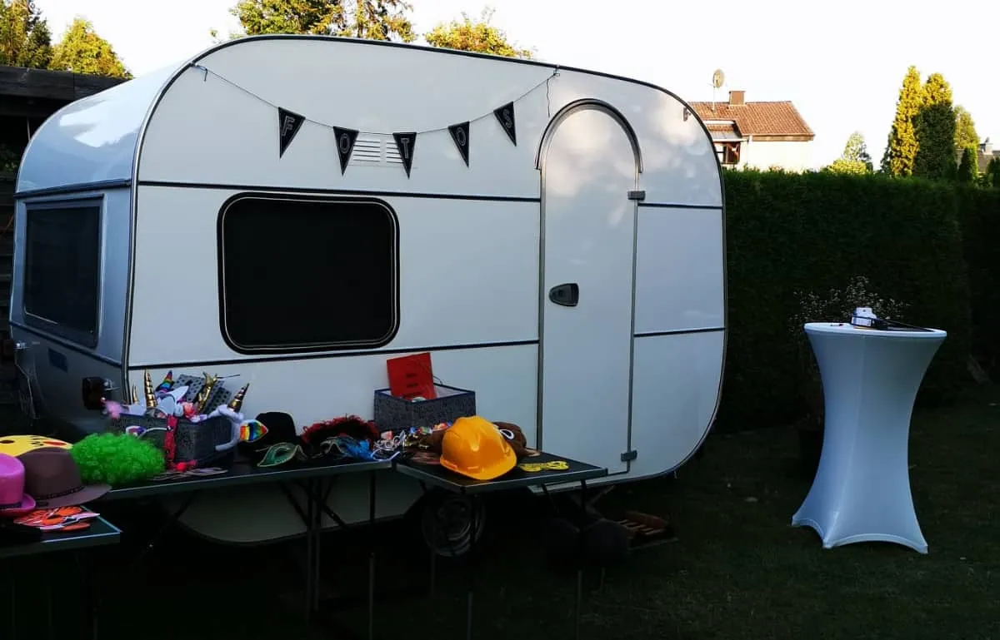

01 DER BESONDERE BLICKFANG
FOTOPOLIS CAMPEREin kleiner Ort.
Ein kleiner Ort.
Voller großer Momente.
Der Fotowohnwagen macht das Fotografieren zu einem eigenen Erlebnis. Ein ungewöhnlicher Treffpunkt, an dem Gäste für einen Moment ganz unter sich sind.
Fotowohnwagen anfragen ↗Originalaufnahme · Neues Premium-Produktfoto in Vorbereitung